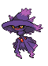
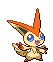
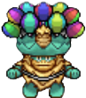

-
Pikachu #025

- Elétrico
Quando se irrita, descarrega imediatamente a energia armazenada nas bolsas das suas bochechas. cresce lentamente.
-
Luxray #405

- Elétrico
Consegue ver claramente através das paredes para localizar as suas presas e procurar as suas crias perdidas.
-
Gengar #094

- Fantasma
- Veneno
Para roubar a vida do seu alvo, ele desliza para a sombra da presa e espera silenciosamente por uma oportunidade.
-
Mismagius #429
- Fantasma
O seu grito soa como um encantamento. Diz-se que raramente o grito pode ser impregnado de um poder de felicidade.
-
Cubone #104

- Terra
Quando a memória da mãe falecida o leva às lágrimas, os seus gritos ecoam tristemente dentro da caveira que usa na cabeça.
-
Mewtwo #150

- Psíquico
O seu DNA é quase igual ao do Mew. No entanto, o seu tamanho e disposição são muito diferentes.
-
Victini #494
- Psíquico
- Fogo
Este Pokémon traz a vitória. Diz-se que os treinadores com Victini ganham sempre, independentemente do tipo de encontro.
-
Lucario #448

- Lutador
- Aço
Diz-se que nenhum inimigo pode permanecer invisível para Lucario, uma vez que este consegue detectar auras - mesmo as de inimigos que não conseguiria ver de outra forma.
-
Snivy #495

- Grama
A exposição à luz solar torna os seus movimentos mais rápidos. Usa as vinhas com mais habilidade do que as mãos.
-
Sawsbuck #586

- Grama
- Normal
Parece que um Sawsbuck com muitas flores nos seus chifres crescerá a um ritmo ligeiramente mais lento porque as flores absorvem os nutrientes do Pokémon.
-
Lebara #000
- Mizera
- Lúcifer
"Faça um pokémon aí, com o nome Lebara"